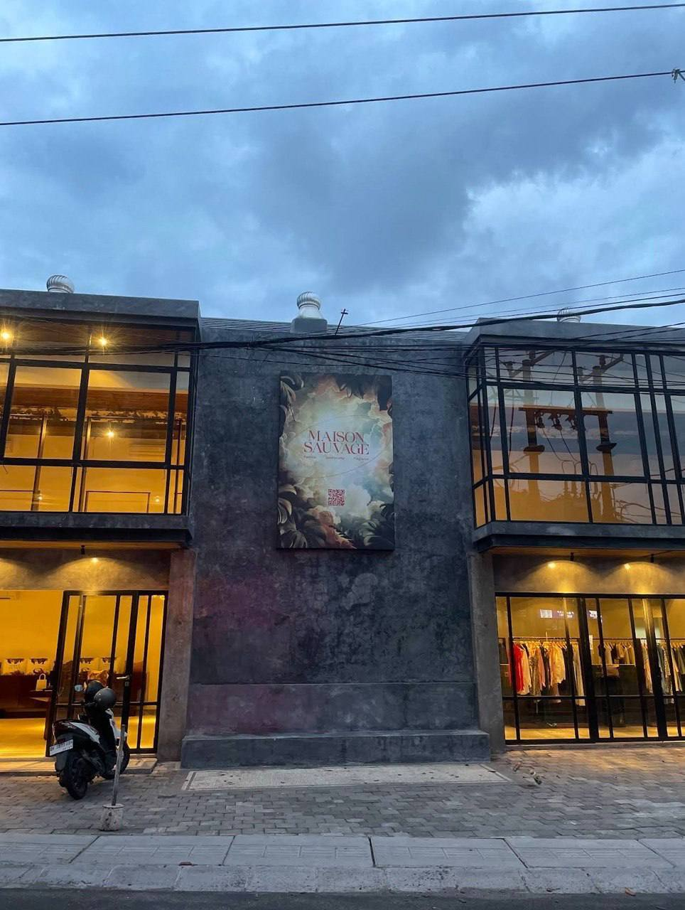

Новогодний фасад «пряничный домик»
Сколько стоит оформить фасад магазина к Новому году так, как на картинке.


Итог
Эконом
18-35 млн
IDR · $1 100-2 100
Свет, шары, пряничная стена баннером, бант, ёлки. Монтаж своими силами и двое помощников.
Как на картинке
45-80 млн
IDR · $2 700-4 800
Всё с картинки. Материалы с маркетплейсов и у местных мастерских, своя бригада.
Под ключ
100-175 млн
IDR · $6 000-10 600
Декор-компания делает всё сама: дизайн, производство, монтаж, демонтаж.
Бюджет 40 млн IDR
В него уверенно влезает эконом. Картинка целиком не влезает даже по нижним ценам: от 45 млн.
Ближе всего к картинке в 40 млн: эконом плюс несколько крупных шаров и леденцов.
Все суммы с запасом 12% на дождь и замены. «Под ключ» это расчёт (своя бригада ×1,5-2 за дизайн и наценку), а не предложение компании. Курс около 16 500 IDR за $1, проверить.
Что дороже всего
- 3-20 млнШарыНа картинке их около 750. Цена зависит от того, где брать: маркетплейс или магазин.
- 10-25 млнОбъёмные пряники и «снег» по кромкам12 печенек из пластика и около 50 м белой «глазури».
- 2-4 млнСвет почти ничего не стоит300 м тёплых уличных гирлянд. Электричество за сезон около 0,5 млн.
Где экономить
- −5-10 млн300 крупных шаров вместо 750 мелких
- −8-20 млнПряники и глазурь печатью на одном баннере, без объёмаВечером с улицы разница небольшая.
- −4-10 млнБелые гирлянды-сосульки вместо «снега» по кромкам
Смета по позициям
Вариант «как на картинке». Допущения: фасад около 20 × 8 м, центральная стена около 7 × 7 м.
| Позиция | Кол-во | За единицу, IDR | Сумма, млн IDR |
|---|---|---|---|
| Свет | 1,8-3,6 | ||
| Тёплые гирлянды 220V IP65 по контурам и «сосульки» | 30 × 10 м | 60-120 тыс. | 1,8-3,6 |
| Шары и гирлянды | 9,1-38,5 | ||
| Хвойная гирлянда-основа, около 60 м | 22 × 2,7 м | 60-350 тыс. | 1,3-7,7 |
| Шары 8-10 см в гирлянды | ~750 | 4-27 тыс. | 3,0-20,3 |
| Крупные шары 20 см | 30 | 100-200 тыс. | 3,0-6,0 |
| Леденцы Ø30-40 см, пластик с печатью | 30 | 60-150 тыс. | 1,8-4,5 |
| Пряничный домик | 14,5-38,2 | ||
| Печать «пряничной» стены на баннере | ~50 м² | 30-80 тыс./м² | 1,5-4,0 |
| Каркас и крепление баннера | 1 | 1,0-3,0 | |
| Объёмные печеньки 0,8-1,2 м: пластик, печать, резка | 12 | 0,4-1 млн | 4,8-12,0 |
| «Снег-глазурь» по кромкам | ~50 м | 100-250 тыс./м | 5,0-12,5 |
| Большой бант 1,5-2 м | 1 | 1,0-3,5 | |
| Колонны-леденцы: полосатая плёнка | 4 × 3,5 м | 0,3-0,8 млн | 1,2-3,2 |
| Ёлки | 2,8-9,6 | ||
| Ёлка 180 см | 2 | 0,6-2,8 млн | 1,2-5,6 |
| Игрушки и свет на ёлки | 2 | 0,3-0,8 млн | 0,6-1,6 |
| Ящики-пряники под ёлки | 2 | 0,5-1,2 млн | 1,0-2,4 |
| Мелочи | 2,1-6,3 | ||
| Колпаки-леденцы на вентиляторы крыши | 3 | 0,3-0,7 млн | 0,9-2,1 |
| Светящиеся звёзды в окнах | 12 | 100-350 тыс. | 1,2-4,2 |
| Электрика | 1,5-4,5 | ||
| Уличные удлинители, коннекторы, таймеры, УЗО | 1 | 1,0-3,0 | |
| Электрик на подключение | 1 | 0,5-1,5 | |
| Монтаж | 7,7-16,1 | ||
| Крепёж | 1 | 0,5-1,5 | |
| Монтаж: 4 человека × 5 дней | 20 чел-дней | 200-350 тыс. | 4,0-7,0 |
| Демонтаж после праздников | 6 чел-дней | 200-350 тыс. | 1,2-2,1 |
| Леса или вышка, 2 недели | 1 | 1,5-4,0 | |
| Доставка | 1 | 0,5-1,5 | |
| Итого без запаса | 39,5-116,8 | ||
| С запасом 12% | 44,3-130,8 | ||
Верх вилки посчитан по магазинным ценам на всё. Если шары и ветки брать оптом на маркетплейсах, итог ближе к 45-80 млн.
Что сделать до заказа
- Замерить фасад: ширина, высота, длина всех кромок. Без замеров точность ±30%.
- Посмотреть договор аренды: можно ли крепить декор и сверлить фасад. Спросить согласие арендодателя.
- Учесть дожди. Декабрь и январь это сезон дождей: только уличные гирлянды IP65, пластик вместо картона, пенопласт красить и защищать.
- Успеть по срокам. Объёмные элементы заказать в начале ноября, смонтировать до 1 декабря.
- Взять 2-3 предложения: декор-компания в Денпасаре, мастерская печати и резки пластика, бригада монтажа.
Как окупить
- Бренды-партнёры спонсируют часть декора в обмен на упоминание.
- Фасад как фотозона даёт бесплатный охват в Instagram.
- Привязать к рождественской ярмарке на втором этаже.
Откуда цифры
- Гирлянда Krisbow 10 м, IP65: Rp119.970, Ruparupa
- Ветка-гирлянда Noelle 270 см: Rp349.930-489.930, Ruparupa
- Шар Noelle 20 см: Rp199.900, Ruparupa
- Ёлки 180 см: Rp599.700-2.799.300, Ruparupa
- Печать баннера: от Rp28.000 за м², Tokopedia
- Минимальная зарплата в Бадунге 3,79 млн в месяц, WageIndicator. Монтажникам заложено 200-350 тыс. в день, проверить.
- Пряники, «снег», бант, колонны и леса: оценка без проверенных цен. Нужны предложения мастерских.